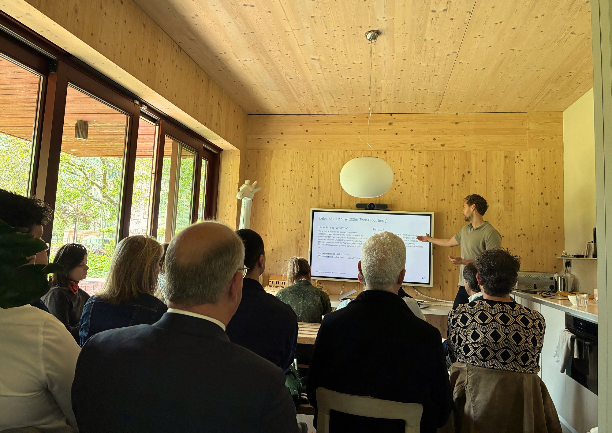

Collaboration in Urban Densification
Why doesn't bringing people together always lead to action?
Rooftop extensions could create much-needed housing without taking up more urban land. But turning that potential into actual homes is not just a technical challenge. It depends on people with different interests finding ways to work together.
For my MSc thesis, I stepped into the meeting rooms where these conversations were happening. During two sessions organised by the Municipality of Rotterdam, I observed who spoke, who listened, how people positioned themselves and how discussions unfolded. Using field notes, seating maps and 11 interviews, I tried to understand the dynamics behind the formal conversations. I particularly enjoyed this detective-like way of researching: looking closely at small interactions to understand much larger urban challenges.
What surprised me was that bringing people together didn't necessarily bring them closer to action. The sessions encouraged learning and exchange, but not shared commitments. Those with the greatest influence over implementation could also afford to wait, while others depended on their decisions.
It made me think differently about urban design. We spend so much time considering how the environments we create influence citizens, but what about the people making decisions about our cities? We cannot design their behaviour, but we can shape the conditions in which they meet, negotiate and collaborate.